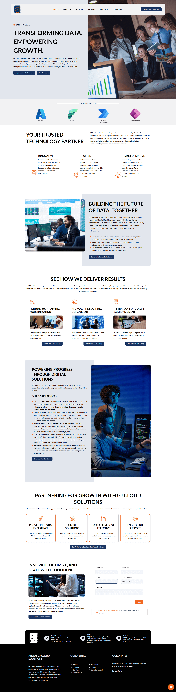

Homepage design and WordPress development for GJ Cloud Solutions.
WordPress | Photoshop
GJ Cloud Solutions is a cloud services provider targeting mid-to-enterprise level businesses. This project was part of a brand growth initiative at MindBridges, where I was engaged as UI/UX and Multimedia Designer. The goal was to give GJ Cloud a digital presence that matched the credibility of their service offering — a homepage that could immediately communicate expertise, build trust, and convert visitors into leads.
GJ Cloud lacked a strong digital presence that reflected their enterprise capabilities. Their audience — IT decision-makers and business owners — needed to immediately recognise the company as a credible, professional partner. The design had to communicate technical depth without feeling cold or inaccessible, and it had to generate leads through a clear service hierarchy and prominent conversion points. Building this entirely in WordPress also meant balancing design ambition with platform constraints.
I led the homepage design and WordPress development end-to-end — including information architecture planning, visual design, custom Photoshop asset creation, and live deployment. I also contributed to the broader branding strategy developed for GJ Cloud as part of MindBridges' client engagement, ensuring the homepage design was consistent with the wider brand direction being established simultaneously.
The homepage was structured around a strong above-the-fold hero section with a clear value proposition and CTA, followed by a services block using iconography and short descriptors to communicate breadth without overwhelming. Social proof elements — client logos and trust signals — were positioned early in the scroll path to reinforce credibility before users reached the detailed service sections. The colour palette and typography were chosen to feel modern and enterprise-ready, complementing the brand identity developed in parallel.
Delivered a polished, brand-aligned homepage that significantly elevated GJ Cloud Solutions' digital presence. The site became the primary digital touchpoint for client acquisition and formed the foundation for the company's ongoing marketing campaigns.
